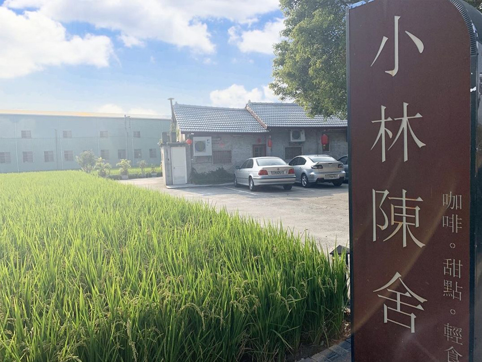
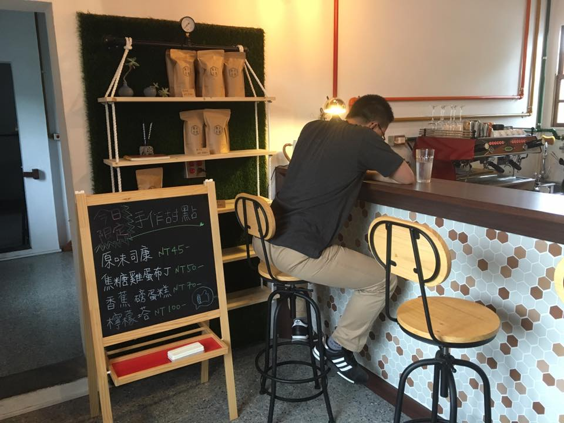
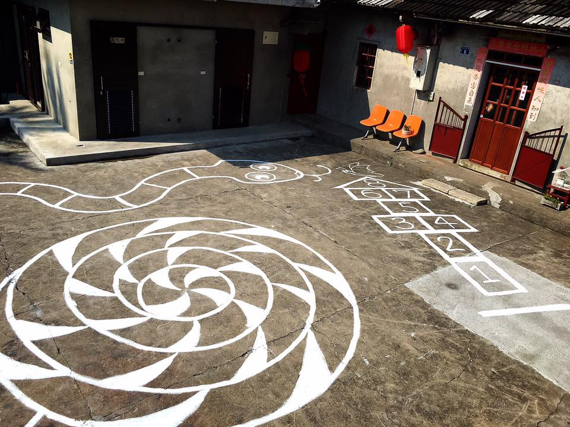

<!DOCTYPE html>
<html lang="en">

<head>
    <meta charset="UTF-8">
    <meta name="viewport" content="width=device-width, initial-scale=1.0">
    <title>Document</title>
    <link rel="stylesheet" href="https://stackpath.bootstrapcdn.com/bootstrap/4.4.1/css/bootstrap.min.css"
        integrity="sha384-Vkoo8x4CGsO3+Hhxv8T/Q5PaXtkKtu6ug5TOeNV6gBiFeWPGFN9MuhOf23Q9Ifjh" crossorigin="anonymous">
    <link rel="stylesheet" href="./css/layout_ver2.css">
    <link rel="stylesheet" href="./css/index_ver2.css">
    <STYLE>
        .bbb {
            height: 0;
        }

        .aaa {
            background-color: rgba(0, 0, 0, 0.2);
            width: 100%;
            height: 100vh;
        }

        .bg {
            width: 100%;
            height: 100vh;
            position: fixed;
            left: 0;
            top: 0;            
            background-attachment: fixed;
            background-image: url(./img/banner01.jpg);
            background-size: cover;
            background-position: center;
        }
        
        .mask {
            width: 100%;
            height: 100vh;
            position: fixed;
            left: 0;
            top: 0;   
            background-color: rgba(255, 255, 255, 0.3);
        }

        section {
            position: relative;

        }

        .banner1 {
            width: 100%;
            height: 100vh;
        }

        #about_us {
            /* position: absolute;
            top: 100vh;
            left: 50%;
            transform: translatex(-50%); */

        }
    </STYLE>
</head>

<body>
    <div class="bg">
        <div class="mask"></div>
    </div>
    <section>
        <div class="banner1"></div>


        <div id="about_us" class="mb-5">
            <div class="container">
                <h1 id="about_us_text" class="title">關於我們</h1>

                <!-- 創立時間 -->
                <div id="time" class="row d-flex align-items-center vh-50">
                    <div class="picture col-12 col-md-6">
                        
                    </div>
                    <div class="article col-12 col-md-6 order-1 order-md-0 p-5">
                        <h2>創立時間</h2>
                        <p class="about_us_article_1">
                            坐落在台中烏日的小林陳舍，從原本近乎荒廢的古厝，花了1年的時間修建，創立於2016年，改造過程超乎當初的想像，店內的擺飾，桌椅都相當考究，保留許多現代無法看到的家電器具。
                        </p>
                    </div>

                </div>
                <!-- 創辦故事 -->
                <div class="row d-flex align-items-center vh-50">
                    <div class="col-12 col-md-6 order-1 order-md-0 p-5">
                        <h2>創辦故事</h2>
                        <p class="about_us_article_2">
                            我是陳尚泊，一個咖啡廳老闆。回想起四年的碩生歷程，起床看著燒杯，睡前握著滴管，日復日、年復年，對於化工的熱情早就被消磨殆盡。問了自己:「我做過什麼自己所喜愛的事情呢?」我做實驗的時候就是要找出組合，我為甚麼不能將我喜愛的事物做組合呢?

                        </p>
                    </div>
                    <div class="col-12 col-md-6">
                        
                    </div>
                </div>

                <!-- 存在使命 -->
                <div class="row d-flex align-items-center vh-50">
                    <div class="col-12 col-md-6">
                        
                    </div>
                    <div class="col-12 col-md-6 p-5">
                        <h2>存在使命</h2>
                        <p class="about_us_article_3">
                            現今的都市裡，有多久沒有好好放鬆自我了呢，平時忙碌的生活，總是覺得該好好找個時間靜下來，享受片刻寧靜的悠閒午後，店內的擺設就像時光機器般，可以讓人看見舊時的光景，每位登門的旅人都使老屋不再是空置蕭條，它是有生命力的，它的溫度來自於每個拜訪的旅人。
                        </p>
                    </div>
                </div>
            </div>
        </div>


    </section>


    <script>


        window.onscroll = function () {

            var target = document.querySelector('.bg')
            console.log(target.getAttribute("style"));

            // chrome
            // console.log(document.documentElement.scrollTop);

            //safari
            // console.log(document.body.scrollTop);

            var nowScrollTop = document.documentElement.scrollTop
            var blurLevel = (Math.round(nowScrollTop / 100)) + 1
            target.setAttribute("style", `-webkit-filter:blur(${blurLevel}px);`)

        }
    </script>

    <script src="https://code.jquery.com/jquery-3.4.1.slim.min.js"
        integrity="sha384-J6qa4849blE2+poT4WnyKhv5vZF5SrPo0iEjwBvKU7imGFAV0wwj1yYfoRSJoZ+n"
        crossorigin="anonymous"></script>
    <script src="https://cdn.jsdelivr.net/npm/popper.js@1.16.0/dist/umd/popper.min.js"
        integrity="sha384-Q6E9RHvbIyZFJoft+2mJbHaEWldlvI9IOYy5n3zV9zzTtmI3UksdQRVvoxMfooAo"
        crossorigin="anonymous"></script>
    <script src="https://stackpath.bootstrapcdn.com/bootstrap/4.4.1/js/bootstrap.min.js"
        integrity="sha384-wfSDF2E50Y2D1uUdj0O3uMBJnjuUD4Ih7YwaYd1iqfktj0Uod8GCExl3Og8ifwB6"
        crossorigin="anonymous"></script>
</body>

</html>